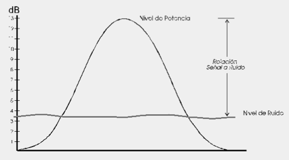

La relació senyal a soroll
Els factors fonamentals que controlen l'índex i la qualitat de la transmissió d'informació són l'ample de banda B i la potència S de la senyal.
L'ample de banda d'un canal és el rang de freqüències que aquest pot transmetre amb raonable fidelitat, per exemple, si un canal pot transmetre amb raonable fidelitat un senyal les components de freqüència ocupen un rang de 1,000 fins a un màxim de 5,000 Hz (5 kHz) l'ample de banda serà de 4 kHz.
Per comprendre el paper de B, es considera la possibilitat d'augmentar la velocitat de transmissió de la informació mitjançant la compressió en el temps de la senyal. Si una senyal es comprimeix en el temps un factor de dos, es podrà transmetre en la meitat del temps, i la velocitat de transmissió es duplica. No obstant això, la compressió per un factor de dos fa que el senyal "oscil·li" dues vegades més ràpid, el que implica que les freqüències dels seus components es dupliquin. Per transmetre sense distorsió aquesta senyal comprimida, l'ample de banda del canal ha de duplicar. D'aquesta manera, l'índex de transmissió de la informació és directament proporcional a B. Amb més generalitat si un canal d'ample de banda B pot transmetre N polsos per segon, llavors, per transmetre KN polsos per segon es necessita un canal d'ample de banda KB. Per reiterar, el nombre de polsos/segon que es poden transmetre a través d'un canal és directament proporcional al seu ample de banda B.
La potència S de la senyal té un paper dual en la transmissió d'informació. Primer, S està relacionada amb la qualitat de la transmissió. En incrementar S, la potència de la senyal, es redueix l'efecte del soroll de canal, i la informació es rep amb major exactitud, o amb menys incertesa. Una major relació de senyal a soroll S / N permet també la transmissió a través d'una distància major. En qualsevol cas, una certa S / N mínima és necessària per a la comunicació.

Generalment la relació senyal a soroll s'expressa en dB que és 10 log S / R amb logaritme en base 10. Una relació senyal a soroll de 10.000 vegades dóna 10 log 10.000 = 40 db.
Capacitat màxima d'un canal.
El 1928 Harry Nyquist, un investigador en l'àrea de telegrafia, va publicar una equació que mesurava la raó de transmissió de la senyal en bauds. La raó de Nyquist és igual a 2B símbols (o senyals) per segon, on B és l'ample de banda del canal de transmissió. Així, fent servir aquesta equació, l'ample de banda d'un canal telefònic de 3.000 Hz pot transmetre fins 2x3.000, o 6.000 bauds.
Claude Shannon després de la investigació de Nyquist va estudiar el com el soroll afecta la transmissió de dades. Shannon va considerar la raó senyal-a-soroll del canal de transmissió (mesurat en decibels o dB) i va enunciar el teorema de Capacitat de Shannon.
-  C = B log2 (1 + S / N) bps